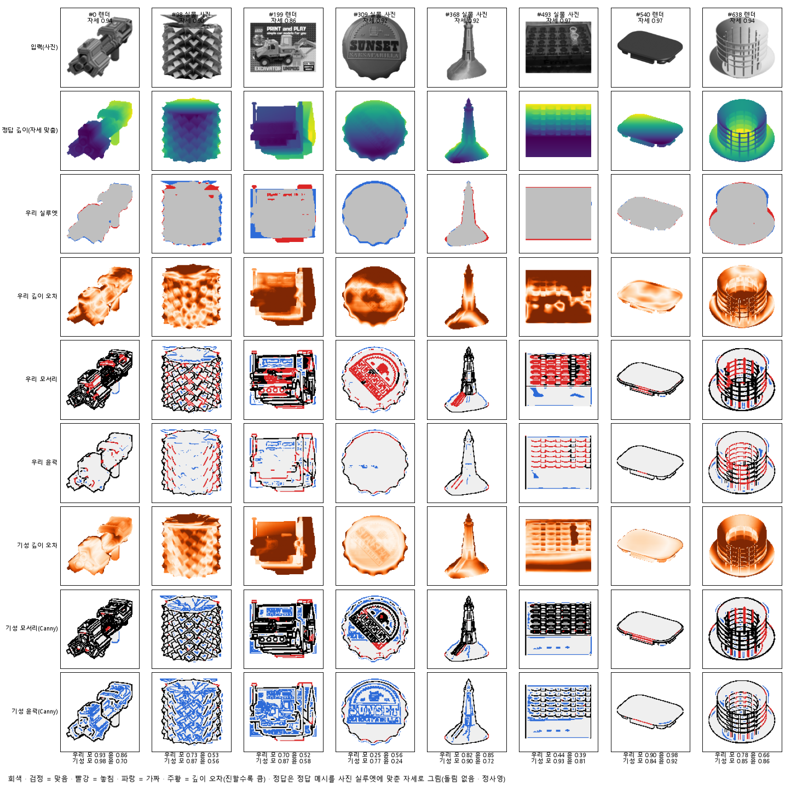

m1_tr0220_h000_실물사진
렌더로 배운 망(tr217)이 실물 사진에서도 윤곽 · 깊이를 그려 내나?
판정 · 다(사이) — 자세 맞는 46 장 윤곽F 0.708 대 Canny 0.631(+0.078 · 95 % 구간 +0.024 ~ +0.131 · 34/46 장 이김) · 렌더 0.949 − 0.241 → 실패 사진을 종류별로 세기 · 깊이SSI 0.136 대 Depth Anything 0.115(실물에서 짐) · 남의 렌더 윤곽 0.82 · CAD 화면 · 실물 0.65
결정 표(돌리기 전에 정함)
- 만약 판정 묶음 윤곽F ≥ Canny + 0.05 그리고 윤곽F ≥ 렌더 0.949 − 0.10(= 0.849)
다음 실물에서도 거의 됨 → 실물 여러 장(나) 합치기 판 - 만약 윤곽F < Canny
다음 렌더 → 사진 간극이 큼 → 학습 렌더를 실물답게(색 · 질감 · 배경 · 조명 무작위) 다시 학습 - 만약 그 사이(Canny 보단 + 0.05 넘지만 0.849 아래 · 또는 Canny 위 + 0.05 안)
다음 실패 사진을 종류별로 세기(입력 종류 · 배경 떼기 · 질감 · 원근)
분석
한 줄로
물음: 흰 바탕 렌더로만 배운 망이 실물 사진에서도 윤곽(앞뒤가 끊기는 선)과 깊이를 그려 내나?
답: 반만 된다(결정 표 「다」). 자세가 맞는 46 장에서 윤곽 F 는 0.71 이다. Canny 의 0.63 보다는 확실히 낫지만(차 +0.08, 95 % 구간 +0.02 ~ +0.13, 46 장 가운데 34 장에서 이김) 렌더에서 낸 0.95 와는 거리가 멀다(판정선 0.849). 깊이는 실물에서 오히려 기성 모델(Depth Anything)보다 나쁘다(0.136 대 0.115). 그래서 결정 표대로, 어떤 사진에서 무너지는지 종류별로 센다.
왜 이 판을 했나
tr217 은 지도 여섯 장(실루엣 · 깊이 · 모서리 · 직선 · 원호 · 윤곽)을 렌더에서 잘 배웠다(모서리 0.95 · 윤곽 0.95 · 깊이 0.053). 하지만 그 렌더는 학습 렌더와 같은 렌더러, 같은 흰 바탕이었다. 우리 목표는 임의의 사진 → CAD 코드다. 그러니 다음으로 물을 것은 이것이다: 렌더에서 배운 것이 실물 사진으로 넘어가나?
바꾼 것 하나
입력만 바꿨다. tr217 시험 렌더 대신 tr208 실물 시험지 사진 132 장(모델마다 한 장)을 넣었다. 사진은 배경을 떼고(RMBG), 흰 바탕 회색으로, 물체 긴 변이 그림의 0.83 이 되게 맞췄다(학습 렌더와 같은 틀). 정답은 정답 메시를 사진 실루엣에 가장 잘 맞는 방위 · 고도로 세워서 그렸다. 망 무게는 tr217 의 6,000 스텝 그대로다.
결과

| 자세 맞는 46 장 | 우리(217) | 기성 | 렌더 시험(tr217) | 넘었나 |
|---|---|---|---|---|
| 윤곽 F | 0.708 | Canny 0.631 | 0.949 | Canny + 0.05 넘음 · 0.849 못 넘음 → 「다」 |
| 깊이 오차(깊이SSI · 낮을수록 좋음) | 0.136 | Depth Anything 0.115 | 0.053 | 판정 밖 · 기성에 짐 |
| 실루엣 IoU | 0.918 | RMBG 0.924 | 0.990 | 판정 밖 |
윤곽 F 는 정답 선에서 2 화소 안에 그린 선이 얼마나 맞고(정밀) 정답 선을 얼마나 덮는지(재현)를 한 숫자로 합친 값이다. tr218 의 세밀 무게도 같았다(윤곽 0.704 · 깊이 0.133).
입력 종류별(같은 46 장):
| 입력 종류 | 장 | 윤곽 F 우리 / Canny | 깊이 우리 / Depth Anything |
|---|---|---|---|
| 남이 만든 렌더 | 16 | 0.82 / 0.75 | 0.114 / 0.091 |
| CAD · 슬라이서 화면 | 9 | 0.65 / 0.57 | 0.161 / 0.147 |
| 실물 사진 | 21 | 0.65 / 0.57 | 0.142 / 0.121 |
왜 이렇게 나왔나
확인한 것
- 무너짐은 「사진이라서」만이 아니다. 남이 만든 렌더도 윤곽이 0.95 → 0.82 로 떨어진다. 우리 렌더러 밖의 그림이면 이미 떨어지고, 실물 사진과 CAD 화면은 0.65 로 더 떨어진다.
- 윤곽에서 Canny 를 이긴 까닭은 주로 가짜 선이 적어서다. 그림에서 Canny 는 인쇄 글자(#309 병뚜껑 로고 · #199 상자 그림)와 표면 결(#98)을 모두 선으로 잡아 파랑이 많다. 우리 망은 그런 곳을 거의 건너뛴다.
- 깊이는 렌더에서는 우리가 이겼는데(0.053 대 0.074), 실물에서는 46 장 가운데 12 장에서만 이긴다. 실물 사진으로 배운 Depth Anything 이 사진 쪽에서는 더 낫다.
짐작 (아직 확인 안 함)
- 우리가 놓치는 윤곽(빨강)은 렌더 학습에 드물던 것으로 보인다. 어두운 판의 구멍 줄(#493), 안이 비치는 기둥 우리(#638), 촘촘한 결(#98)이 그렇다. 몇 장에서 이런지는 아직 세지 않았다. 「다」 의 다음 일이 바로 이것을 세는 것이다.
- 실루엣이 RMBG 와 거의 같은 것은 입력 자체가 RMBG 로 바탕을 뗀 그림이라서일 수 있다. 실루엣은 이 판에서 따로 배운 것이 거의 없다.
한계
- 판정 묶음은 46 장, 입력 종류마다 9 ~ 21 장이라 종류별 숫자는 거칠다.
- 정답은 정답 메시를 사진 실루엣에 맞춘 자세다(돌림 없음 · 정사영). 그래서 원근이 센 사진에서는 정답 자체가 사진과 조금 어긋난다. 자세 IoU 0.85 아래 86 장을 판정에서 뺀 까닭이다.
- 모서리 F(우리 0.58 · Canny 0.70)는 STL 정답을 믿을 수 없어서 판정에서 미리 뺐다. 매끈하게 쪼갠 STL 은 모서리가 0 이고, 장식이 많은 STL 은 점 부스러기가 된다.
- 입력 종류별 표는 처음에 모서리 F 로만 적었다가, 판정에 쓰는 자인 윤곽 · 깊이로 다시 적었다(11-18 · 요약만 다시 돌림 · 판정은 그대로).
- 망 하나, 씨앗 하나.
배운 것과 다음
렌더에서 배운 윤곽은 실물에서 반쯤만 넘어가고(0.95 → 0.71), 깊이는 실물에서 기성 모델에 진다. 간극은 사진만이 아니라 「우리 렌더러 밖」 에서 이미 시작된다.
- (결정 표 「다」) 판정 묶음 46 장에서 윤곽을 놓친 사진을 종류별로 센다: 입력 종류 · 배경 떼기 · 질감 · 원근 · 렌더에 드문 모양.
- 깊이는 실물 쪽에서 Depth Anything 을 바탕 후보로 다시 본다. 우리 깊이 머리를 그 위에 얹을지는 1 번 결과를 본 뒤에 정한다.
- 세는 결과가 「렌더에 드문 것」 쪽으로 몰리면, 학습 렌더를 실물답게(색 · 질감 · 조명 · 배경) 무작위로 바꾸는 판이 다음이다.
판 기록
- 카드 · 코드 커밋 13e262c(돌리기 전). 11-17 밤에 사용자가 GPU 를 비우자고 해서 멈췄고, 11-18 10:35 ~ 11:01 에 다시 돌렸다(GPU 0 · 132 장 · 실패 0).
- 판정은 잼.json, 그림은 그림.png. 사진별 기록은 out/설명/캐드부품/모델220/잼_사진별.json · 보관.npz(git 밖).